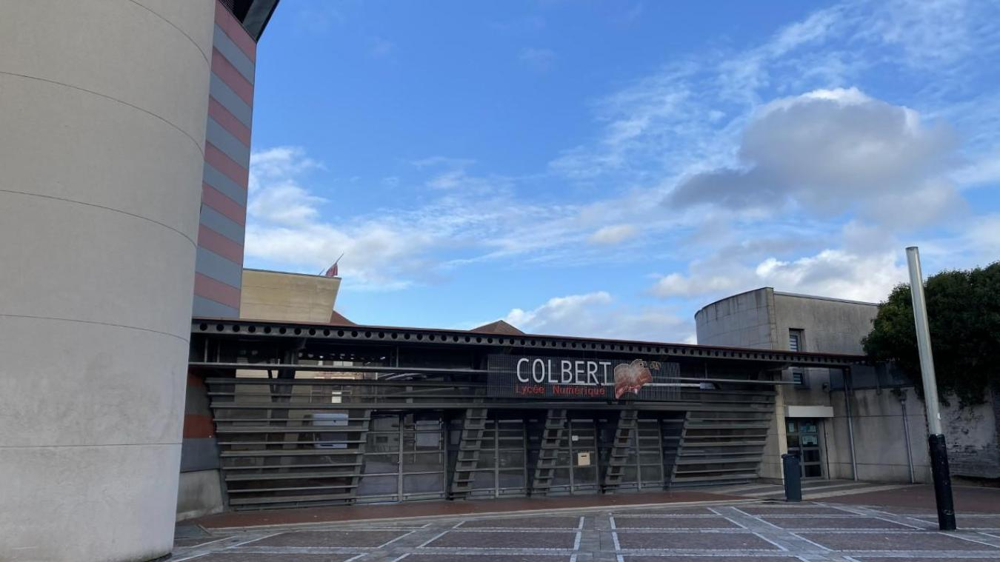

Formations
← →Institut Universitaire de Technologie
Date : 2022 - Présent
Formation : Bachelor Universitaire de Technologie (BUT) en Informatique
Lycée Colbert
Date : 2015 - 2021
Diplôme : Baccalauréat sciences et technologies de l'industrie et du développement durable 2019
Formation :Après avoir obtenu mon baccalauréat j'ai enchainé sur une Classe Préparatoire au Grandes Écoles Technologie et Sciences Industrielles
Collège Jules Verne

Date : 2010 - 2015
Diplôme : Brevet des collèges